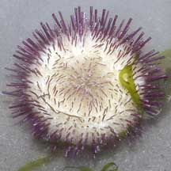
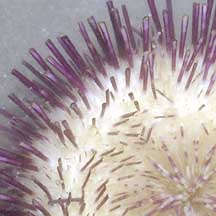

|
|
| echinoids text index | photo index |
| Phylum Echinodermata > Class Echinodea > sea urchins > Genera Salmacis |
| Passion
salmacis urchin Salmacis virgulata Family Temnopleuridae updated Apr 2020 Where seen? This sea urchin with maroon spines is sometimes seen our Northern shores among seagrasses. It is seen among White sea urchins but are much fewer in number. Features: Body diameter 5-8cm, usually white sometimes yellow. Spines short (1-1.5cm) uniformly maroon (not banded), except for those around the mouth (on the underside). Spines on the upper side are short, slender and sharp. Spines on the sides and underside are longer, thicker and have flattened tips. Spines around the mouth may be banded white and maroon. Long white tube feet. |
 Changi, May 06 |
 Tip sharp spines at the top, longer flattened spines on the sides. Changi, May 06 |
 Underside. |
 Spines around mouth banded. |
 |
| Passion salmacis urchins on Singapore shores |
On wildsingapore
flickr
|
| Other sightings on Singapore shores |
|
Acknowlegment
|